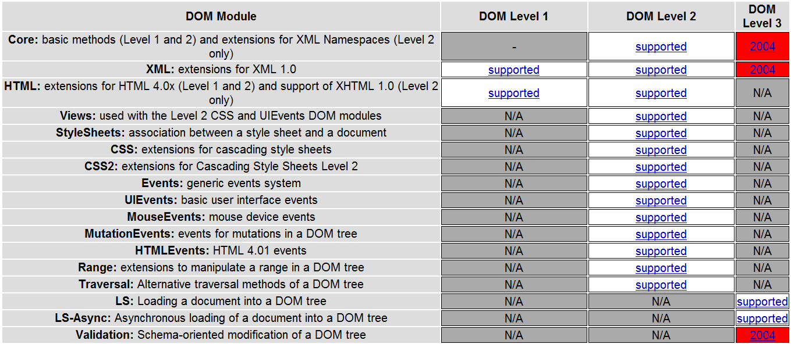
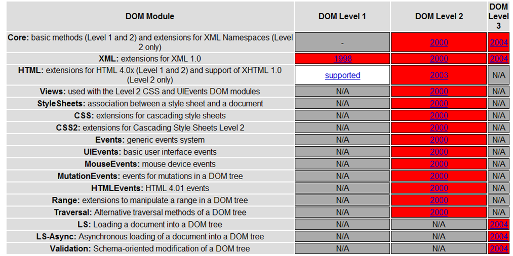

DOM
use the arrow keys to navigate; press space for slide overview
DOM
Intro
Attaching scripts — recap
-
In HTML, linked in the head or body:
<body> ... <script src="js/pagescripts.js"></script> </body>alert('hello') // code in pagescripts.js -
Script blocks are also possible:
<body> ... <script> alert('hello'); </script> </body>
Attaching scripts — recap
-
Inline Javascript also exists:
<input type="button" value="I'm a button" onclick="alert('auch')" />
- we won't use inline scripts, for the same reason we don't use inline styles
Javascript in the browser
-
Browsers can interprete and execute Javascript (unlike PHP), but:
- implemented javascript version may differ (e.g.
foreachis only available since Javascript 1.6) - minor proprietary additions or differences between the different Javascript engines do exist
- all together, we won't suffer much from these differences
- implemented javascript version may differ (e.g.
-
The browser also provides an API named the Document Object Model (DOM)
- The DOM is a structural representation of the document with objects, collections, functions and events
- We'll use Javascript to access and manipulate the DOM (actually it's our only option)
Browser DOM support
- DOM level 1 (1998), DOM level 2 (2000), DOM level 3 (2004),
- support was desastrous if not absent at the time of IE5/NN4
- today still major differences between browsers exist
- most important features for this course are well supported by modern browsers, or easy to fix by using an appropriate library wiping out the differences
- test your browser support on http://www.w3.org/2003/02/06-dom-support.html
Browser DOM support
-
Opera 12:

Browser DOM support
-
Chrome 22:
Browser DOM support
-
Firefox 16:
Browser DOM support
-
Internet Explorer 10:
Browser DOM support
-
Internet Explorer 8:

Browser About trees
-
Before we talk about DOM, some terms used in tree structures:

Browser About trees
-
Some more terms:

DOM
Document Object Model
DOM — full version
-
The DOM is one big tree, representing a webpage:

This tree looks weird, and it actually is. It contains some elements like forms, images, applets, the body etc... but many other elements are missing like tables, divs, the head etc...
The reason is that the blueprint of this tree representation isn't the result of a logical process, but has rather grown organically in a time no real standard existed on the background of a full-scale browser war between Netscape and Internet Explorer. By the time the W3C jumped in to develop a standard, they had no choice but use a compromise between the IE and NN DOM models instead of starting from scratch.
DOM — selector functions
-
All elements under the
documentnode can also be found with one of the five available selector functions:

DOM — obsolete nodes
-
These selector functions are actually all we need for navigation under the
documentnode, so let's throw the rest out:

DOM — obsolete nodes
-
We don't use frames anymore, so let's remove that as well:
DOM — obsolete nodes
-
The window.events node was originally used to get information from mouse and keyboard events, but a more modern approach (see later) is used these days, so:
DOM — obsolete nodes
-
With the
screennode you can find out about the screen:alert(screen.width); alert(screen.colorDepth); -
Screen detection is considered bad design practice, so...
DOM — obsolete nodes
-
The
navigatornode contains information about the browser version:alert(navigator.userAgent); -
Browser detection is bad practice, so...
DOM — final version
-
The remains redrawn:
DOM — nodes
- Nodes can be an element or collection of elements.
-
Each element of the tree has
- properties like
width,value,srcetc... (some are read/write, others are read only) - functions like
submit(),focus()etc.. (which are actually properties too) - events like
onclick,onchange,onloadetc...
- properties like
-
The list is different for each element:
- the available properties, functions and events depend on node type (image, input...)
- the values of the properties depend on the state of the node
- almost all events are fired because of user interaction
- The best hands-on DOM reference I know is W3Schools
DOM — window
DOM — window
-
Some functions:
window.alert('hi') window.resizeTo(800, 600) // luckily disabled in many browsers if (window.confirm('print this page?')) window.print() -
As
windowis the root of any path, you may omit this:alert('hi'); resizeTo(800, 600) // luckily disabled in many browsers if (confirm('print this page?')) print(); -
Example of an event:
window.addEventListener('load', function() { alert('document is ready loading'); });
DOM — history
DOM — history
-
You are not supposed to mess with browser history:
history.back(); // don't use this! - Since HTML5 however this node contains some interesting new methods like pushState() and popState(), which can be used to maintain browsing history logic in rich Javascript applications.
DOM — location
DOM — location
-
Refers to the address bar. You can write the
hrefproperty to force a redirect:location.href = 'http://www.google.be'; -
Example of a function:
location.reload();
DOM — document
DOM — document
-
This node carries the entire HTML document. The node itself is rather uninteresting, with only a few properties and methods (apart from the selector functions we'll talk about in a minute):
document.title = "hello there";document.write('kot kot kedei') // beware: this page will be overwritten
DOM — collections
DOM — collections
-
These three functions return an array of objects:
// get all links var links = document.getElementsByTagName('a'); // get all elements with the name attribute foo var foos = document.getElementsByName('foo'); // get all elements based on a CSS selector var els = document.querySelectorAll('#form1 input[type=radio]'); -
This is technically equivalent:
var foos = document.getElementsByTagName('div'); var els = document.querySelectorAll('div'); - the latter is much more flexible but also much slower, so don't overuse
DOM — collections
-
All collections know the
lengthproperty:alert(document.getElementsByTagName('img').length) -
Collections can be accessed as an indexed array:
// find all elements with a src attribute var test = document.querySelectorAll('*[src]'); // get the second element's name alert(test[1].nodeName); -
You can also access collections as an object, with id's as keys:
// get all forms var images = document.getElementsByTagName('img'); // get the element with id 'img1' in hash notation alert(images['img1'].alt); // or in dot notation alert(images.img1.alt);
DOM — elements
DOM — finding elements
-
These two functions can find an element directly:
// get one element with the given id var button1 = document.getElementById('btnOk'); // get the element matching the CSS selector // if more than one match, get the first var el = document.querySelector('#siteWrapper pre.bigger:last'); -
You can of course also find an element by finding a collection first and then using a key or index:
var divs = document.getElementsByTagName('div'); var firstDiv = divs[0];
DOM
Manipulating the DOM
Manipulating CSS and content
-
Some of the common properties and events for elements:
// cache the variable var el = document.getElementById('manipulatingDemo'); // change CSS properties (note: camelCased!) el.style.backgroundColor = '#cc6'; el.style.padding = '20px'; // set 'test' as classname el.className = 'test'; el.innerHTML = 'I am THE demo'; // add some events el.addEventListener('mouseover', function() { this.innerHTML = 'Hammertime'; }); el.addEventListener('mouseout', function() { this.innerHTML = 'Can\'t touch this'; });I am the demo
To run the demo, click 'run' first, then hover over the 'I am the demo' text below
Manipulating CSS and content
-
Note: with→ fixed in most modern browsers.styleyou can only read CSS properties after they have been set through the same.styleproperty.// can't read alert(document.getElementById('styleDemo').style.backgroundColor); // set color document.getElementById('styleDemo').style.backgroundColor = 'darkred'; // can read alert(document.getElementById('styleDemo').style.backgroundColor);I am the demo
Manipulating properties
-
There's a wide variety of elements: images, links, buttons, divs... Each may have its own additional properties, events and methods. Some examples:
<form id="demoForm1"> <label>Yes/no: <input type="checkbox" name="chb1" id="chb1" /></label>; </form> <img src="img/02_dom/me.jpg" id="img1" width="40" height="40" />document.getElementById('chb1').checked = true;document.getElementById('img1').width = 20;
- Again, w3schools.com has an excellent DOM reference
Manipulating properties
-
You may still dig your way through the full-blown DOM scheme the old-fashioned way:
var button1 = document.forms.form1.btnOk; var image2 = document.images[1]; var numLinks = document.links.length; - There's nothing really really wrong with this syntax — and it's lightning fast — but for simplicity you might want to stick with our five selector functions.
Add your own properties
-
DOM elements are regular Javascript objects, so you can extend it with your own properties. A quick example:
<input type="button" value="button" /> <input type="button" value="button" /> <input type="button" value="button" />// find buttons var buttons = document.querySelectorAll('input[value=button]'); // add event function to prevent closures (see 01_syntax.html#/51) var addClickEvent = function(btn) { btn.addEventListener('click', function() { if (!this.numClicks) this.numClicks = 0; // glue a number to the button this.numClicks++; // increment number of clicks alert(this.numClicks + ' times clicked'); }) } // iterate over buttons adding click events for (var i = 0; i < buttons.length; i++) { addClickEvent(buttons[i]); }
To run the demo, click 'run' first to attach all events, then click the buttons multiple times in any order
Attaching events
-
We've hooked events to an element before, here's one more example:
var par = document.getElementById('eventsDemo'); par.addEventListener('click', function() { alert('You clicked me!'); }); par.addEventListener('mouseover', function() { this.style.backgroundColor = '#333'; this.style.color = 'white'; }); par.addEventListener('mouseout', function() { this.style.backgroundColor = ''; this.style.color = 'black'; });I am the demo
To run the demo, click 'run' first, then click on the 'I am the demo' text below
Attaching events
-
You can listen for the same event more than once:
var par = document.getElementById('eventsDemo2'); par.addEventListener('click', function() { alert('You clicked me (1)!'); }); par.addEventListener('click', function() { alert('You clicked me (2)!'); });I am the demo
To run the demo, click 'run' first, then click on the 'I am the demo' text below
Attaching events
-
You may also run across the older syntax for event hooking (notice onclick instead of click):
document.getElementById('btn1').onclick = function() { ... } - This syntax does not allow hooking more than once or removing listeners, so don't use it.
Removing events
-
You can also remove an event, but only if the attached function has a name:
var par = document.getElementById('eventsDemo3'); var clickHandler1 = function() { alert('This is the first handler'); }; var clickHandler2 = function() { alert('This is the second handler'); this.removeEventListener('click', clickHandler1); }; par.addEventListener('click', clickHandler1); par.addEventListener('click', clickHandler2);I am the demo
To run the demo, click 'run' first, then click on the 'I am the demo' text below multiple times
Event bubbling
-
What happens if two or more nested elements handle the same event:
<div id="nesDemo"> <a href="http://www.google.be"><img src="img/02_dom/me.jpg" alt=""></a> </div>document.querySelector('#nDemo').addEventListener('click', function() { alert('div clicked'); }); document.querySelector('#nDemo img').addEventListener('click', function() { alert('img clicked'); }); document.querySelector('body').addEventListener('click', function() { alert('body clicked'); }); document.querySelector('#nDemo a').addEventListener('click', function() { alert('a clicked'); });
Prevent the default
- All events are executed from inside to outside, and finally the default browser action is executed: event bubbling.
-
If you just want to prevent the browser action, call
preventDefault()anywhere along the route:... document.querySelector('#nDemo a').addEventListener('click', function(e) { alert('a clicked'); e.preventDefault(); });
Stop bubble propagation
-
If you want to stop bubbling, call
stopPropagation():... document.querySelector('#nDemo a').addEventListener('click', function(e) { alert('a clicked'); e.stopPropagation(); }); -
If you want to stop both, call both:
... document.querySelector('#nDemo a').addEventListener('click', function(e) { alert('a clicked'); e.stopPropagation(); e.preventDefault(); });
Event target
-
At any time during bubbling you can know which top element was clicked (even if it doesn't handle the event):
... document.querySelector('body').addEventListener('click', function(e) { alert(e.target.tagName + ' clicked'); }); -
Say you have a table with 1000 cells; instead of binding 1000 events, thanks to bubbling it's possible to bind a single handler on the <table> itself, which saves memory.
var table = document.querySelector('#bubbling'); table.addEventListener('click', function(event) { alert('click was on ' + event.target.innerHTML); });1 2 3 4 5 6
Keyboard and mouse
-
The
eparameter of the event listener contains information of the event. Serious browser incompatibilities exist in this area. An example for mouse button detection:<input type="button" id="btn1" value="Left or right click me"> <script> document.getElementById('btn1').addEventListener('mousedown', function(e) { var right = (e.which && e.which == 3) || (e.button && e.button == 2); alert('You clicked ' + (right ? 'right' : 'left')); }); </script> -
Some cross-browser scripts can be found online on
quirksmode.org→offline or use a decent Javascript library.
DOM
Initializing scripts
The wrong way
-
Beware that scripts are executed when loaded, even if the rest of the page is still loading. This won't work;
<html> <head> <script> document.getElementById('span1').innerHTML = 'hello there'; </script> </head> <body> ... <span id="span1"></span> ... </body> </html>
The better way (1)
-
Put your scripts at the bottom:
<html> <head> </head> <body> ... <span id="span1"></span> ... <script> document.getElementById('span1').innerHTML = 'hello there'; </script> </body> </html> - Executes when HTML and CSS is loaded, but does not wait for images etc... to load
The better way (2)
-
A little cleaner with an external script:
<html> <body> ... <span id="span1"></span> <script src="js/pagescripts.js"></script> </body> </html>document.getElementById('span1').innerHTML = 'hello there';
Window onload event
-
If you wish to start your scripts when everything (including images) is loaded, use the window load event:
<html> <body> ... <span id="span1"></span> <script src="js/pagescripts.js"></script> </body> </html>window.addEventListener('load', function() { document.getElementById('span1').innerHTML = 'hello there'; });
Script Encapsulation
-
Script encapsulation with self invoking function (strict mode):
(function() { 'use strict'; // variables var var1, var2, var3; // function 1 var function1 = function() { ... } // function 2 var function2 = function() { ... } // start your engines! window.addEventListener('load', function() { // bind events here using functions and variables above // ... }); })();
- simple way to encapsulate your variables in strict mode
- we will use this one mostly during lab sessions
Alternative: app pattern
-
Alternative pattern with single application object (strict mode):
// global app object var app = { // variables var1: undefined, var2: undefined, // function 1 function1: function() { 'use strict'; ... }, // function 2 function2: function() { 'use strict'; ... }, // istart function start: function() { 'use strict'; // bind events here using this.functions and this.variables above // ... } }; // start the app app.start();
- typical pattern for app-like pages
Alternative: game pattern
-
Alternative pattern with constructor (strict mode):
// global app object var Game = function(id, options) { 'use strict'; // variables this.id = id; this.options = options; // function 1 this.function1 = function() { ... }, // function 2 this.function2 = function() { ... }, // start function this.start = function() { // bind events here using this.functions and this.variables above // ... } }; // start the game var game = new Game('myGame', { difficulty: 3, theme: 'retrospace' }) game.start();
- typical pattern for games; multiple games can run simultaneously
DOM
Demo — Mood selector

The HTML
-
The HTML:
<!DOCTYPE html> <html> <head> <title>Moodselector</title> <meta charset="utf-8" /> <script src="js/scripts.js"></script> </head> <body> <h1>How 'r you feeling today?</h1> <form id="testForm" action="#"> <select name="lstMood" id="selMood"> <option value="0">--unknown--</option> <option value="1">darn bad</option> <option value="2">bad</option> <option value="3">neutral</option> <option value="4">good</option> <option value="5">jolly good</option> </select> <img src="img/mood0.gif" alt="mood icon" id="imgMood" /> </form> </body> </html>
Linking the script
- We'll write a simple mood selector, where selecting a value in the list changes the smiley next to it
-
We link our scripts at the end of the body:
<!DOCTYPE html> <html> <head> <title>Moodselectior</title> ... </head> <body> ... <script src="js/scripts.js"></script> </body> </html>
List change event
-
In
scripts.jswe'll hook a functionsetMoodon the change event of the listwindow.addEventListener('load', function() { document.getElementById('lstMood').addEventListener('change', function() { setMood(this.value); }); });
Adjusting the image
-
The function
setMoodis quite simple:var setMood = function(nr) { // check boundaries if (nr < 0) nr = 0; if (nr > 5) nr = 5; // adjust image document.getElementById('imgMood').src = 'img/mood' + nr + '.gif'; }
DOM
Demo — Formchecking
The HTML
-
Let's start with a classic HTML form:
<!DOCTYPE html> <html> <head> <title>Formchecking demo</title> <meta charset="utf-8" /> <link rel="stylesheet" href="css/library.css" /> <link rel="stylesheet" href="css/forms.css" /> </head> <body> <form action="#" id="frm1"> <dl class="clearfix"> <dt><label for="title">Titel:</label></dt> <dd> <select name="title" id="title"> <option value="-1">Selecteer...</option> <option value="dhr">De Heer</option> <option value="mvr">Mevrouw</option> <option value="juffr">Juffrouw</option> </select> <span class="error" id="errTitle"> </span> </dd> <dt><label for="name">Naam:</label></dt> <dd> <input type="text" name="name" id="name" size="30" value="" /> <span class="error" id="errName"> </span> </dd> <dt><label for="email">E-mail:</label></dt> <dd> <input type="text" name="email" id="email" size="30" value="" /> <span class="error" id="errEmail"> </span> </dd> <dt> </td> <dd class="buttons"> <input type="submit" id="btnOk" name="btnOk" value="Ok" /> <input type="submit" id="btnBack" name="btnBack" value="Annuleren" /> </dd> </dl> </form> </body> </html>
Our checklist
- Cliendside formchecking isn't essential for security, it just creates a nicer user experience
- Don't make tests rediculously paranoia and detailed; ultimately serverside formchecking is responsible!
-
Checks we'll do:
- is the title selected?
- is the name filled in?
- is the email filled in?
- is the email correct?
Linking the script
-
We link our scripts at the end of the body:
<!DOCTYPE html> <html> <head> <title>Formchecking demo</title> ... </head> <body> ... <script src="js/scripts.js"></script> </body> </html>
Intercepting the form
-
In
scripts.jswe'll intercept the form submission:window.addEventListener('load', function() { document.getElementById('frm1').addEventListener('submit', function(e) { e.preventDefault(); // ... form checks here }); });
Intercepting the form
-
Depending on the result of a new
checkFormfunction we'll send the form or not:window.addEventListener('load', function() { document.getElementById('frm1').addEventListener('submit', function(e) { e.preventDefault(); if (checkForm()) this.submit(); }); });
Checking the form
-
The function
checkFormis similar to the PHP version:var checkForm = function() { // clear error messages document.getElementById('errTitle').innerHTML = ''; document.getElementById('errName').innerHTML = ''; document.getElementById('errEmail').innerHTML = ''; // check form var isValid = true; // title selected? if (document.getElementById('title').value == '-1') { document.getElementById('errTitle').innerHTML = 'selecteer een titel'; isValid = false; } // name provided? if (document.getElementById('name').value == '') { document.getElementById('errName').innerHTML = 'geef een naam op'; isValid = false; } // email correct? var rex = /^\w+([\.-]?\w+)*@\w+([\.-]?\w+)*(\.\w{2,3})+$/; if (!rex.test(document.getElementById('email').value)) { document.getElementById('errEmail').innerHTML = 'incorrect formaat'; isValid = false; } // email provided? if (document.getElementById('email').value == '') { document.getElementById('errEmail').innerHTML = 'geef een email op'; isValid = false; } // return return isValid; }
Final version
-
You may define a shorthand for document.getElementById if you wish:
// getElementById shorthand var $ = function(id) { return document.getElementById(id); } var checkForm = function() { // clear error messages $('errTitle').innerHTML = ''; $('errName').innerHTML = ''; $('errEmail').innerHTML = ''; // check form var isValid = true; // title selected? if ($('title').value == '-1') { $('errTitle').innerHTML = 'gelieve een titel te selecteren'; isValid = false; } ...
DOM
Demo — Slideshow
HTML only version
-
We'll start from a HTML-only slideshow with a HTML file for each picture. The HTML for the first:
<!DOCTYPE html> <html> <head> <title>Show photo | Slideshow</title> <meta charset="utf-8" /> <link rel="stylesheet" href="css/reset.css" /> <link rel="stylesheet" href="css/main.css" /> </head> <body> <h2>Bekijk foto's</h2> <ul id="thumbsmenu"> <li><a href="photo1.html"><img src="img/photo1S.jpg" alt="photo 1" /></a></li> <li><a href="photo2.html"><img src="img/photo2S.jpg" alt="photo 2" /></a></li> <li><a href="photo3.html"><img src="img/photo3S.jpg" alt="photo 3" /></a></li> <li><a href="photo4.html"><img src="img/photo4S.jpg" alt="photo 4" /></a></li> </ul> <p><img src="img/photo1L.jpg" alt="photo 1" id="photoBig" /></p> </body> </html>
Linking the script
- Each time the user selects a new picture, a new page needs to be loaded. Let's improve the user experience with some Javascript.
-
Again we link our script in the body:
<!DOCTYPE html> <html> <head> <title>Slideshow</title> ... </head> <body> ... <script src="js/scripts.js"></script> </body> </html>
Selecting all links
-
In
scripts.jswe'll select all links with a query selector:window.addEventListener('load', function() { var imglinks = document.querySelectorAll('#thumbsmenu li>a'); for (var i = 0; i < imglinks.length; i++) { ... } });
Closures — problem (1)
-
This is a tempting solution, but it won't work:
window.addEventListener('load', function() { var imglinks = document.querySelectorAll('#thumbsmenu li>a'); for (var i = 0; i < imglinks.length; i++) { imglinks[i].addEventListener('click', function(e) { // find thumb image inside link var img = imglinks[i].querySelector('img'); // show large version // ... }); } }); -
Never ever use iterator
iin functions defined in a loop; it will have the same value for all functions, see discussion here
Closures — problem (2)
-
This won't work either, for the same reason:
window.addEventListener('load', function() { var imglinks = document.querySelectorAll('#thumbsmenu li>a'); for (var i = 0; i < imglinks.length; i++) { var lnk = imglinks[i]; lnk.addEventListener('click', function(e) { // find thumb image inside link var img = lnk.querySelector('img'); // show large version // ... }); } }); -
The reason is the same:
lnkis common for all functions in the loop
The result will be that all links will show the last image
Closures — solution (1)
-
Luckily, we can use '
this':window.addEventListener('load', function() { var imglinks = document.querySelectorAll('#thumbsmenu li>a'); for (var i = 0; i < imglinks.length; i++) { imglinks[i].addEventListener('click', function(e) { // find thumb image inside link var img = this.querySelector('img'); // show large version // ... }); } });
Click events
-
The rest isn't that complicated; I'm sure you can figure this out:
// shows large image when lnk has been clicked var showImage = function(lnk) { // find thumb image var img = lnk.querySelector('img'); // find big image var photoBig = document.getElementById('photoBig'); photoBig.src = img.src.replace('S.jpg', 'L.jpg'); photoBig.alt = img.alt; } // start scripts window.addEventListener('load', function() { var imglinks = document.querySelectorAll('#thumbsmenu li>a'); for (var i = 0; i < imglinks.length; i++) { imglinks[i].addEventListener('click', function(e) { // prevent default e.preventDefault(); // show image showImage(this); }); } });
Custom attributes
-
We can improve a little on the fexibility of our code by using a custom attribute
data-src-l:<!DOCTYPE html> <html> <head> <title>Show photo | Slideshow</title> <meta charset="utf-8" /> <link rel="stylesheet" href="css/reset.css" /> <link rel="stylesheet" href="css/main.css" /> </head> <body> <h2>Bekijk foto's</h2> <ul id="thumbsmenu"> <li><a href="photo1.html"><img data-src-l="img/photo1L.jpg" src="img/photo1S.jpg" alt="photo 1" /></a></li> <li><a href="photo2.html"><img data-src-l="img/photo2L.jpg" src="img/photo2S.jpg" alt="photo 2" /></a></li> <li><a href="photo3.html"><img data-src-l="img/photo3L.jpg" src="img/photo3S.jpg" alt="photo 3" /></a></li> <li><a href="photo4.html"><img data-src-l="img/photo4L.jpg" src="img/photo4S.jpg" alt="photo 4" /></a></li> </ul> <p><img src="img/photo1L.jpg" alt="photo 1" id="photoBig" /></p> </body> </html>
Custom attributes
-
Now the source for the large versions is given by the server, which is much cleaner than the ugly
...S.jpgto...L.jpgreplace trickvar showImage = function(lnk) { ... photoBig.src = img.getAttribute('data-src-l'); ... }